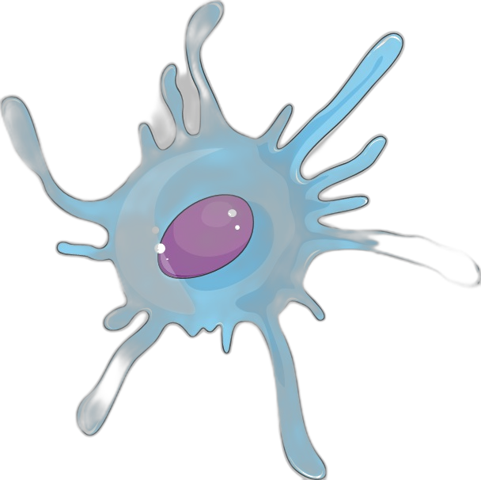
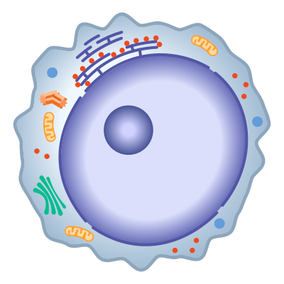
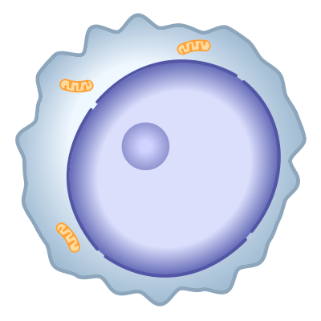

INMUNOLOGÍA MOLECULAR Y CELULAR
Fisiopatología: Hipersensibilidad Tipo I
Ilustración Interactiva Nivel Libro de Texto
🦠
Alérgeno (Ej. Der p 1)
Actividad Proteasa
Tejido Barrera (Mucosa/Piel)
Epitelio Escamoso/Cilíndrico
Ruptura Uniones
Estrechas
Activación PAR-2
TSLP
IL-33
IL-25

DC Inmadura (Tejido)
Captura de Antígeno
Recepción de
Alarminas

Célula Linfoide Innata 2
Activada por
IL-33/TSLP
Secreción temprana
IL-4
Ganglio Linfático Drenante
DC Madura (Presentadora)
Alta expresión MHC-II
Co-estimulación
OX40L+
Linfocito T CD4+ Naïve
Reconocimiento TCR
⚡
Sinapsis Inmunológica
Señal 1: pMHC-II ↔ TCR
Señal 2: OX40L ↔ OX40
Señal 3: IL-4 (de tejido/Tfh)
Linfocito Th2 Activado
Polarizado por GATA-3
Expresa CD40L e
IL-4/13

Linfocito B (Folicular)
Interacción
CD40-CD40L
Activación enzima AID
Célula Plasmática
Switch Isotipo
completado
Producción sistémica
IgE